SznLuv · Top 4 and Spot Lists
Reference walkthrough and prototype decisions · November 9, 2026
Open the interactive mobile prototype
I inspected public browser views and official native screen galleries. Observed describes what appeared on screen. Documented describes steps in the product’s help material. Feedback identifies individual reports and Hypothesis is a design judgment to test with SznLuv users. Phone-width desktop web captures do not represent native iOS or in-app browsers. The research did not change visibility or save content in any competitor account.
01 · Letterboxd · Four favorites and public lists
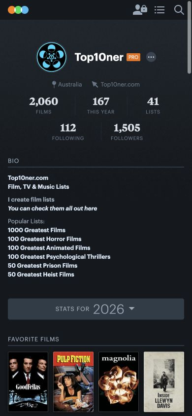
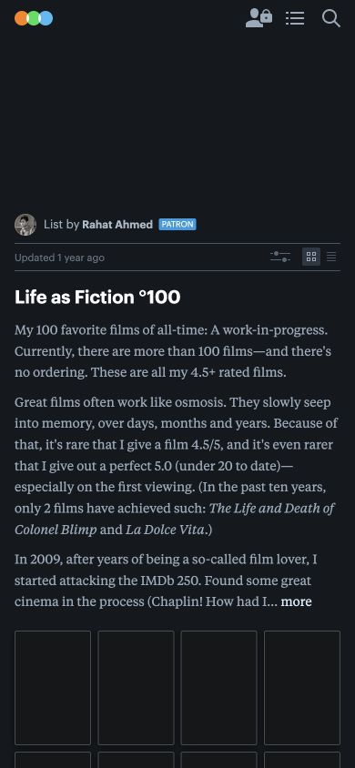
- Profile walkthrough. Open Top10ner’s profile → choose the mobile site → scroll past stats and a long bio → find the four Favorite Films posters → open a film from its poster. The four equal posters make a recognizable group once in view. On this mobile profile, the picks sit near the bottom of the first 844-pixel screen. The account location sits much higher in the identity block. Spot cards need readable names even when an image exists. Profile
- List walkthrough. Open Life as Fiction °100 → find the linked creator above the title → scan the introduction → use Grid or List to change how films display. The byline makes authorship legible. In this example, the reserved backdrop space and long description push the start of the poster grid to about 700 pixels from the top. The mobile editor’s row menu supports notes and moving an item to a position, per Letterboxd’s help. Example list · Letterboxd Help
- Apply to SznLuv. Keep Top 4 directly under identity. Put the city control in that section’s header and use a two-by-two grid with named cards and an icon fallback. A visitor sees one real card if there is one pick. The owner sees open slots. Keep optional list descriptions short, with notes next to the spots they explain.
02 · Spotify · Playlist identity and separate saves
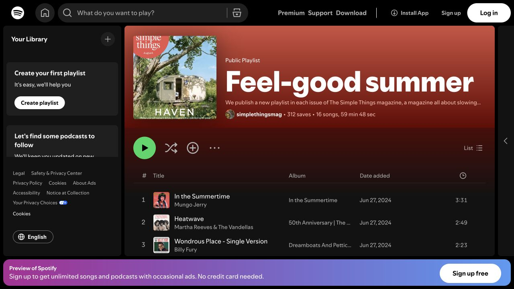
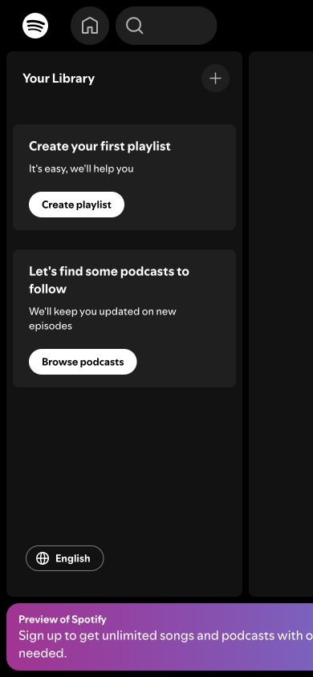
- Playlist walkthrough. Open the public Feel-good summer link → read the title and linked creator in the cover block → reach the control strip → scan tracks. At 390 pixels the desktop-style library occupied the first screen and the playlist header was outside the visible area. Native first-screen placement remains unverified. The colorful cover communicates a theme quickly. The plus near Play and the save controls on tracks need surrounding context to explain their scope. Public playlist
- Documented return paths. Spotify uses Follow from an artist profile and Add or Save for playlists in Your Library. To place a track in a particular playlist, use its menu and choose a destination. Spotify’s privacy and profile-publishing controls are separate. Its docs also describe time-limited invitation links for private playlists, creating a distinct access path users have to learn. Your Library · Following artists · Playlist privacy
- Apply to SznLuv. Link the creator’s name in the list header. Label the page action Follow list, the profile action Follow person, and the row action Save spot. After each action, name the destination. Use a compact byline by default and compare it with an illustrated cover using the same content.
03 · Google Maps · Shared list, item details and revoked access
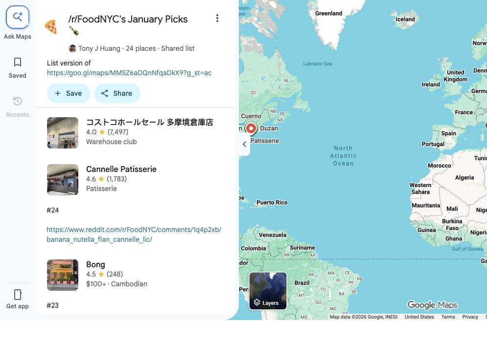
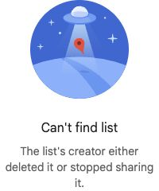
- Shared link walkthrough. Open the FoodNYC link → see the creator, spot count and Shared list label → find Save beside Share → choose Cannelle Patisserie to open its place view. A map beside the list establishes geography. At the phone-width browser viewport, the desktop rail and wide place panel competed for space. The first row was outside the stated NYC theme in the observed example, so using a place count as a relevance cue has limits. Shared Google Maps list
- Documented owner and follower flows. iOS You → New list → Save starts a collection. From a place card Save → choose/create list captures the spot in context. Notes are edited from the list. A recipient can open the link and tap Save list. The collection lands in Lists you saved, and its places can show up on the main map until the user hides that list. Visibility on your own map is another control alongside sharing. Google Maps iOS lists guide
- Unavailable walkthrough. A second shared link opened a generic “Can’t find list” panel. The page gives deletion and stopped sharing as possible reasons. The underlying cause was unknown. Feedback: One FoodNYC commenter found it easy to transfer a place to their own want-to-go list. One Seoul thread commenter reported a list-not-found result. Each is a single report. Unavailable example link · FoodNYC thread · Seoul thread
- Apply to SznLuv. Start with the list and offer Map as a deliberate switch. Put directions in spot details. Check the published state before loading a link or followed collection and show a neutral unavailable screen with a way back to Explore. Keep the list’s contents out of that screen.
04 · Beli · Geography, intent and the missing-spot gap
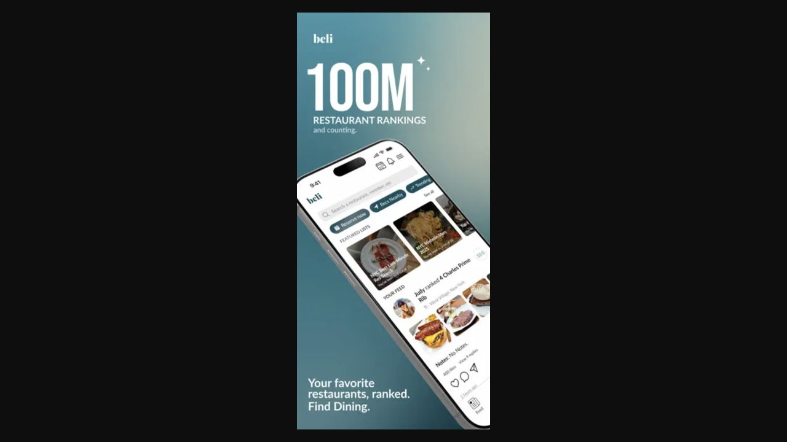
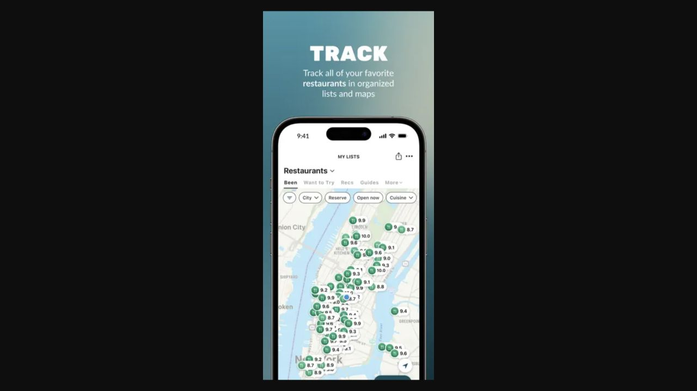
- Observed in the official iPhone gallery. Open the App Store screenshots → compare the feed and map views. Feed cards pair a person with a restaurant. The My Lists screen has Been and Want to Try tabs, then a small City pill among several filters above the map. The city’s selected value is easy to lose among those controls. Featured lists and the feed both compete for attention on the home screen. This is a published visual reference. City switching, native profile editing and saving were not exercised in an authenticated session. Beli iPhone gallery
- Documented and reported. Beli’s listing distinguishes restaurants you have tried from those you want to try and describes tags and notes. An App Store reviewer liked location and cuisine filtering but found comparisons between unlike restaurants tedious. Community posts describe missing restaurants submitted for review and uncertain turnaround. The missing-restaurant route and delays are self-reports. They do not establish how the current app behaves for every user. Beli feature overview and reviews · Missing restaurant thread
- Apply to SznLuv. Keep “save for later” quick and personal. Put the active city beside Top 4 and on each list card. Use search results with neighborhood and address to encourage a match. Make Add a missing spot available from the no-result state so a waterfront pin can be saved in the same session.
05 · Mapstr · Manual pins, followed maps and privacy
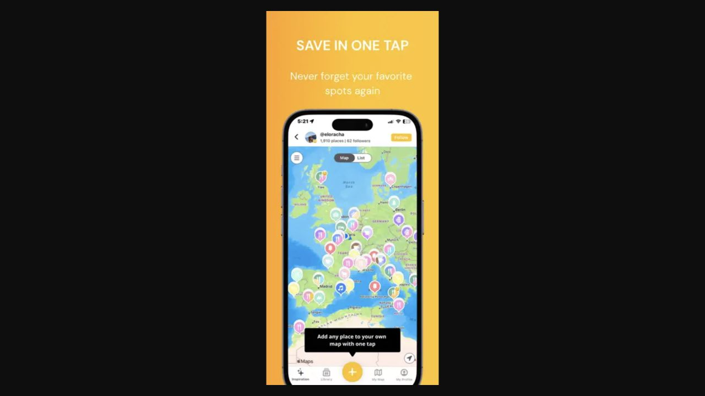
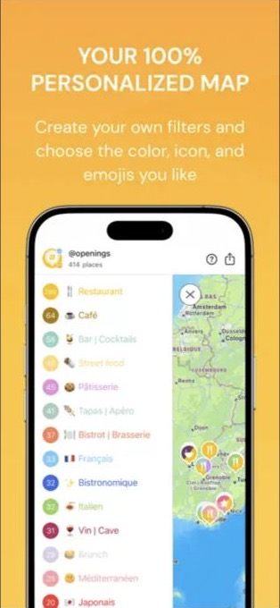
- Observed in the iPhone gallery. Open Mapstr’s published screenshots → compare the followed creator’s map with the color-coded tag filter. The creator and Follow sit above Map / List while a large global plus sits in the tab bar. Dense pins benefit from a companion list for comparing names and notes. Mapstr iPhone gallery
- Documented walkthrough. Start from the global + → search an address or select a point on the map → organize it with tags or notes. Start from a shared public map link → browse in the browser → sign in to follow → return via Library subscriptions → open a followed map → Add on an entry copies it to your own map. Mapstr documents whole-map visibility and private places on a public map, plus separate treatment for contributed places and personal details. The scope is powerful but adds more visibility rules to understand. Mapstr FAQ · Trip planning walkthrough
- Apply to SznLuv. Ask for name and either an address or a pin. Keep creator-specific notes with the list entry. When someone saves a spot, copy the location to their list with a blank note. In the publish review, list the actual note text and each custom address or coordinate.
Decisions to test
| Choice | Prototype default and alternative | What would change the decision |
|---|---|---|
| Top 4 city switcher | City pill and picker. Compare with visible city chips. | Compare first-attempt success switching Vancouver to Brooklyn and explaining whose picks are shown. Chips can work if most profiles have only a few cities. |
| Public list header | Compact title, city, count, byline, description and follow button. Compare with a large illustrated cover. | At 390 × 844, check if a guest can name the creator and read the first useful spot without scrolling. Keep the cover if it adds meaningful orientation without slowing that task. |
| Map placement | Spots first, with a Map toggle. Compare a collapsible preview after the first spot and map before spots. | Give a participant two nearby stops to compare, then ask them to pick a place by reading notes. Ship in-list mapping if it improves the first task without slowing the second. Individual directions are the launch baseline. |
| List geography | One city per list for the first test. Lock the city once a spot is added. | Ask users to bring a real trip or weekend collection. Revisit if people routinely split trips across nearby cities or expect to use a city’s neighboring areas. The Vancouver fixture includes metro-area spots. |
| Top 4 visibility | Private until explicitly shown, per city. Only picked cards appear to visitors. | Ask Susan whether publishing a list also exposes her Top 4, and whether sharing Vancouver should expose Brooklyn. Observe whether the separate controls answer those questions. |
| List publication | Private draft by default. Public adds the profile card and a link. Edits to an already public list stay in draft until reviewed and published again. Making a list private hides it in all visitor views and clears follows. On republish, the link works again and followers can opt back in. | Ask owners to predict which note and custom location are visible, then check their answers from a guest view. Verify revocation with a previously opened link and a followed list. |
Test the two journeys
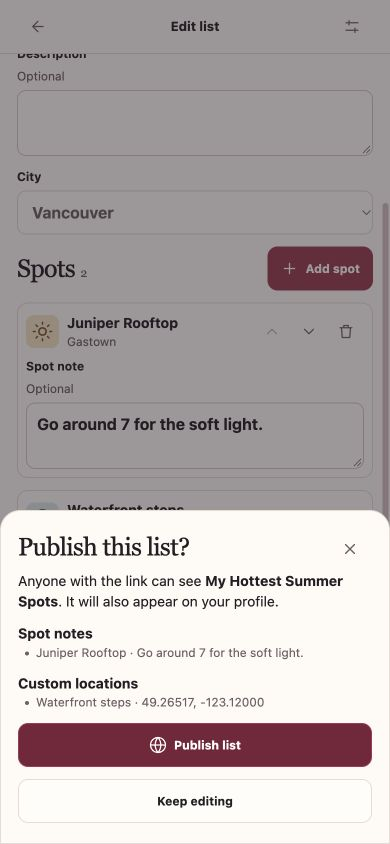
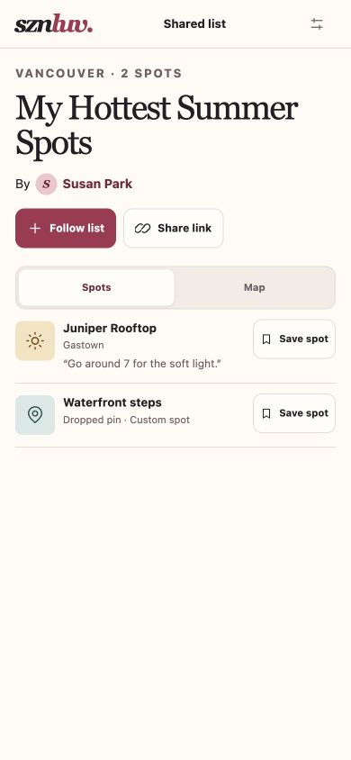
Open the prototype in a browser. On desktop, use the study controls beside the phone. On mobile, use Prototype controls at the top right. The study uses local sample data and simulated identities. Sharing works in the same browser, and the map is illustrative. The rooftop is a fixture. Keep testing inputs fictional. Both journeys were exercised at 390 × 844 in a browser, including guest browsing, access revocation and the three library destinations. Participant sessions and real mobile share handoff remain to be tested.
- Susan makes a summer guide. Choose 01 · Create a list → New list → enter My Hottest Summer Spots → search rooftop and add Juniper Rooftop → add a note → search Waterfront steps → Add a missing spot → place a pin → add the spot → review and publish. Before confirming, ask what a guest will see. Inspect the notes and pin in the publish review. Try reordering and editing the published list.
- A friend opens and returns. From the share sheet choose Open as guest. Find the first spot and open its details before signing in. Tap Follow list, continue as Alex, then Save spot on the rooftop and choose Birthday plans. Return through Library → Followed lists. Verify the rooftop is in My lists → Birthday plans, and see that following Susan is a separate action under People.
- Probe the edges. Switch Susan’s profile to Brooklyn for one public pick. Open a list with illustrated fallbacks and no spot photography. Search an unmatched name. Return to Susan’s library and make the guide private, then reopen the old link and check Alex’s followed lists. The Unavailable link shortcut provides the same visitor state for an independent walkthrough.
In moderated sessions, let the participant start from an uncoached screen. Record first action, completion without a hint, time to first useful spot, wrong-scope saves/follows, and how accurately they predict publication. Give the two layout versions in opposite order across sessions. Test a real iPhone/Android share entry from a messaging and social app once a hosted version exists.
Launch measurement
| Metric | Event and denominator |
|---|---|
| First-list completion | New creators who add at least one spot within 24 hours of starting their first list ÷ creators who start a first list. Split by library vs. Save spot entry. |
| List follow conversion | Unique eligible viewer/list pairs with a successful follow ÷ eligible public viewer/list pairs. Exclude owners and viewers who already follow that list. |
| Spot-save conversion | Unique viewer/list pairs with a spot saved to an owned list ÷ public viewer/list pairs. Attribute the originating list through any sign-in or new-list step. |
| Followed-list return | Followers who reopen a followed list from the library within 7 days ÷ followers with a full 7-day observation window. Track opening from a direct link separately. |
Keep the launch scope at Top 4, spot lists, curated and manual spots, public links, follows and library. Collaboration, comments, notifications and an activity feed can be evaluated after these journeys are understood.